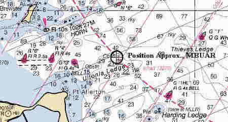

Link Index
MWDC
Home Page
Shipwrecks Page
Albert Galatin
Alice M. Colburn
Alice M. Lawrence
Ardandhu
Barge and Crane
California
Charles S. Haight
Chelsea
Chester Poling
City of Salisbury
Corvan
Dixie Sword
Edward Rich
French Van Gilder
Henry Endicott
Herbert
Herman Winter
Hilda Garston
HMCS St. Francis
James Longstreet
John Dwight
Kershaw
Lackawanna
Lunet
Mars
Pemberton
Pendleton
Pinthis
Port Hunter
Pottstown
Romance
Seaconnet
Trojan
USS Grouse
USS New Hampshire
USS Triana
USS Yankee
USS YSD
Vineyard Sound
Lightship
|
Description: Freighter; Steel
Dimensions: length - 291.2 ft. width - 43.1 ft. depth - 20.6 ft.
Tonnage: gross - 2953, other -
Propulsion: Steam; Single propeller
Machinery: 3 Cylinder Triple Expansion engine, cylinder diameters of 21", 34", 56"
with a stroke of 36"
Cargo: 400000 ft. of hard pine, rosin, turpentine, cotton, cloth, iron cores, clay, naval stores, boxed fruits (oranges, pineapples), cottonseed meal, rice, et cetera
The Shipwreck
Date Sunk: December 26, 1903.
Cause: Collision.
Location: Boston Harbor, 1 mile southeast of Boston Lighthouse.
Coordinates: Latitude, 42o - 19' - 19"N Longitude,70o - 51' - 52"W
Loran: 13991.6 and 25791.5 and 44265.5
Delayed by an easterly snowstorm, the United Fruit Company steamer Admiral Dewey lay at Long Wharf in Boston. Her intended destination was Port Antonio, Jamaica, where she would load fruit bound back to the city. Shortly after noon, Captain Israel, anxious of further delay, decided to get underway and set course for Nantasket Roads, the harbor's southern exit.
At about the same time Captain Israel was preparing to leave Long wharf, the newest addition to the Clyde Steamship Line, Kiowa, was approaching Boston from the south. Less than a year old, the freighter was nearing completion of only her 14th voyage and had just left New York after loading at Jacksonville and Charleston, South Carolina.
As the storm intensified, wind driven snow reduced visibility considerably. Fearing to enter the harbor under such conditions Kiowa's commander, Captain I.K. Chichester, anchored his vessel near the approaches to Nantasket Roads, about two miles outside Boston Light, north of Ultonia Ledge and west of Thieves Ledge.
An hour had elapsed since the Admiral Dewey left Long Wharf. Proceeding at slow speed and with utmost caution the steamer had just cleared Nantasket Roads when suddenly Kiowa appeared out of the gloom directly ahead. With mere feet separating the two steamers Captain Israel could not stop his vessel in time to avoid a collision. Admiral Dewey's sharp bow struck Kiowa on the port side aft of the main rigging, cutting deep into the hull nearly to the keel. The force of the collision nearly Capsized Kiowa, but as the vessels parted she settled back on an even keel. Taking on water fast, Captain Chichester immediately ordered all watertight bulkheads closed and distress signals sounded. Although the collision had mortally wound Kiowa, Admiral Dewey was hardly scratched and stood by the stricken steamer to assist in rescue operations if necessary.
The first to answer Kiowa's distress whistle was the tugboat Cormorant, Captain George Ham, which was inbound with an empty scow on a 600-foot towline. Cutting across Kiowa's bow, careful that his tow cleared the freighter, Ham first rescued two men in a rowboat, which had been launched from Kiowa to assess the damage and was helpless in the gale. He then ran Cormorant up to the sinking steamer's lee side, where seas were calmer. By now portions of Kiowa's deck were awash, in places only her rails stood above the rising sea. When Cormorant maneuvered close to the freighter's stern Captain Chichester ordered his men to jump for their lives as the steamer sank from beneath them.
Miraculously there were no fatalities.
Back to Top
Dive Site Conditions
Depth in feet: maximum - 45; minimum - 30.
Visibility in feet: average - .
Salvers cleared Kiowa's wreckage to a depth of 30 feet. In places wreckage rises ten feet off the bottom but most of the debris is flat.
Click on the image to go to the MapTech Map Server,
for additional navigation information.

Back to Top
Historical Background
Constructed: year - 1903; where - Philadelphia, Pennsylvania.
builder - William Cramp & Sons Ship and Engine Building Co..
Construction details: 3 decks, 1 wood sheathed; 5 Bulkheads.
Crew: 35 ; Master: I. K. Chichester
Owners: Clyde S. S. Co..
Home or Hailing Port: New York, N.Y.
Former Name(s) and date(s): .
Official number: 161229. Country:U.S.A..
Other Comments: Two masted, schooner rigged, considered one of the finest freighters on the coast
Back to Top
Salvage
On the 27th of December Kiowa was found to have settled on an even keel. At low tide there was 11 feet of water over her decks with only the tops of her masts and smokestack above water. The following day portions of her cargo began washing ashore at the Glades. The value of her cargo was estimated at $165000. Lifesavers were dispatched to keep a lookout for wreckage and prevent pilfering.
The Boston Towboat Company was awarded the salvage contract. On the morning of December 29th work commenced as the tug Ariel towed the lighter Melrose to the sunken steamer, where three divers began removing cargo. The next day the schooner Mary A. Whalen, returning from the fishing grounds, brought in 5 bales of cotton fished from the bay. Calm weather permitted salvage work to go on unhampered. According to one published source; on January 1, 1904 "about 100 bales of domestics, 200 boxes of oranges and 15 bales of cotton have been secured and placed on board the lighters."
However, favorable conditions were not to last. By January 7th the vessel's upper deck had collapsed and she was "racked and badly battered." As Kiowa broke up, portions of her cargo continued to drift ashore. On January 17th "Great sticks of hard pine lumber and barrels of turpentine" were found firmly frozen in the ice at Small Cove, just over the Hingham Bridge.
On March 31st, $1100 was raised from the auction of 18 bales of cotton and 14 bdls of cloth, recovered from the wreck. By June 8th the Boston Towboat Company had abandoned work raising Kiowa. Although another company applied for the privilege, permission was not forthcoming.
However, by August 1st wreckers were back at work on the steamer. Unfortunately published sources don't list this new company by name only that a "Captain Sorenson" was in charge of salvage work. His divers reported that one hatch had been cleared of lumber and the hull was in good condition. Work consisted of plugging holes in her stern, securing hatches and making the hull watertight. On August 30th steam pumps were lowered to the wreck. But a few days later attempts to raise the steamer were unsuccessful.
The Boston Towboat Company received the contract from the U.S. Government to remove the wreck, as an obstruction to navigation, before December 1st. The plan was to dynamite the wreckage and "save everything possible." Work commenced on September 9th. By the 19th they had blown up Kiowa's decks and secured 50000 feet of lumber.
Back to Top
Sources:
Boston Globe; December 26, 1903
Boston Post; August 6, 1904
Fishable Wrecks and Rockpiles; Coleman & Soares; 1989
Lippincott's Pronouncing Gazetteer of the World; J.B. Lippincott & Co., 1874
MapTech Mapserver
Merchant Vessels of the United States; 1903
New York Maritime Register; December 31, 1903; January 6, 13, 20, 27, 1904;
March 30, April 6, June 8, August 3, September 7, 14, 21 1904
New York Times; December 27, 30, 1903
Shipwrecks and Nautical Lore of Boston Harbor; Sullivan, 1990
The Fisherman, magazine; August 18, 1988
The Record, "American Lloyds", American Bureau of Shipping; 1904
Back to Top
These files are under construction. Any information, specifically dive site related, would be greatfully appreciated.
Send comments to: Chris Hugo
Copyright © 2000 by Christopher C. Hugo
Massachusetts Board of Underwater Archaeological Resources
All Rights Reserved
|